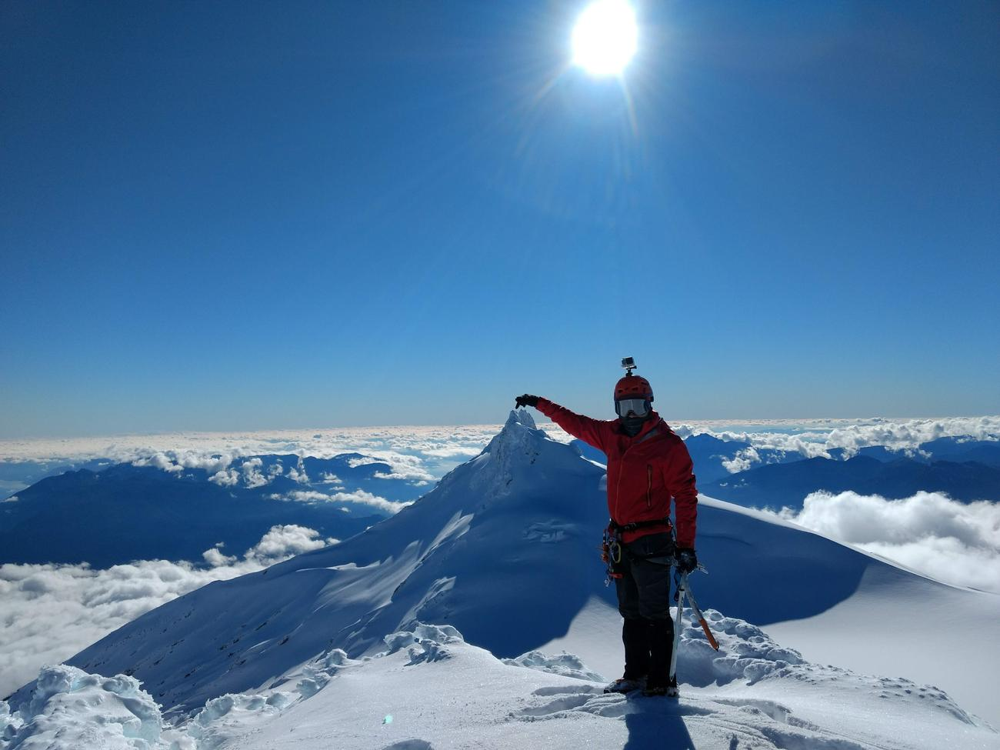

Temporadas ·
Un destino entre agua y montaña todo el año
Verano en el volcán y el río, invierno en la nieve, otoño y primavera en el bosque. Qué hacer en cada temporada.

El destino Mocho Choshuenco se vive en las cuatro estaciones. Cada temporada abre experiencias distintas.
Verano
La mejor ventana para la ascensión al volcán Mocho, el trekking al glaciar y el cráter Tumba del Buey. Es también la temporada fuerte del rafting en el río Fuy y del kayak en el lago Panguipulli.
Invierno (junio a septiembre)
Con nieve suficiente salimos con raquetas a la Tumba del Buey y a senderos familiares, y hacemos clases de esquí en Huilo Huilo. La ascensión invernal al Mocho es para quienes buscan un desafío mayor.
Otoño y primavera
Bosques de colores, menos visitantes y ríos con buen caudal: buen momento para trekking en bosque nativo y actividades de agua, según condiciones.
Todas las salidas dependen del pronóstico y de las condiciones de la montaña. Si no es seguro salir, reprogramamos.
Por Angel Delgado Cárdenas, trip leader de Wechuntu Outdoor · Guía de Media Montaña ANGM N° 37028